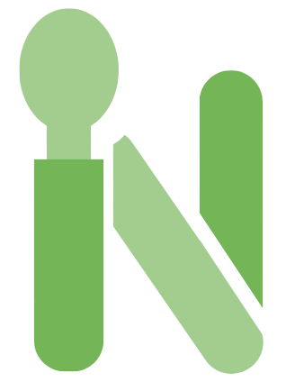
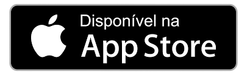
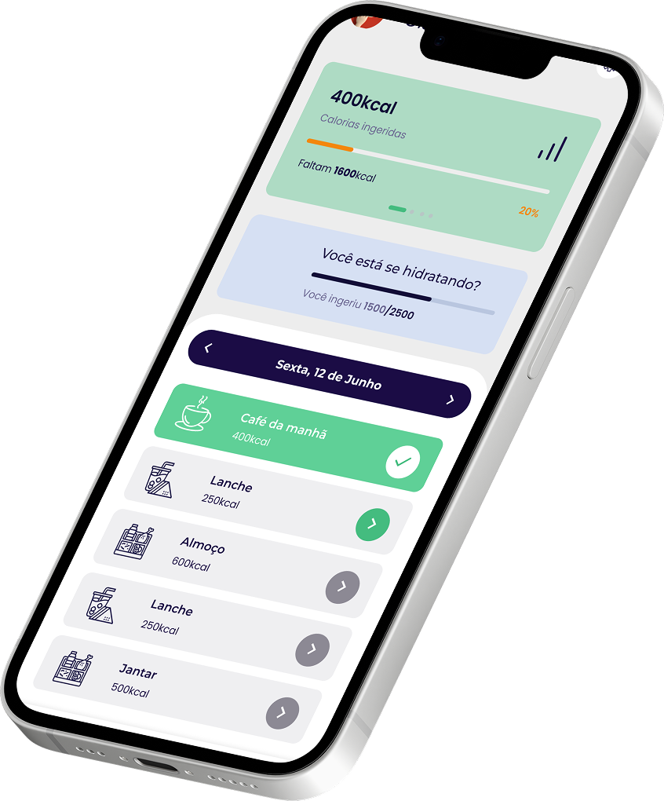
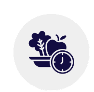
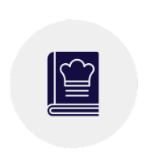
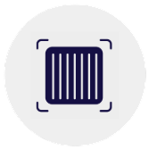
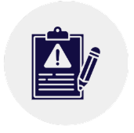
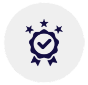
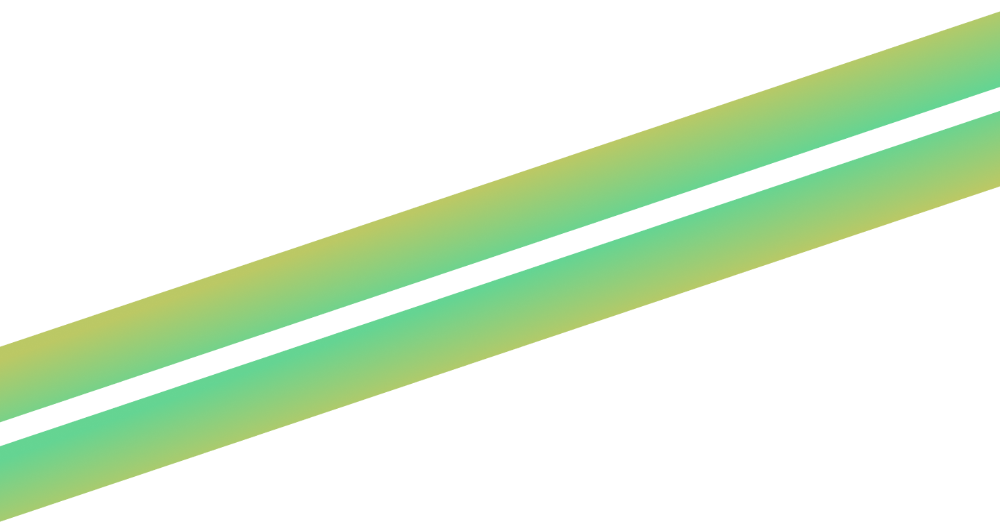

A Nutr.IA é um aplicativo planejado para democratizar o acesso a nutrição, para que todos, independemente da condição financeira, tenham acesso a ajuda de qualidade para construir planos alimentares e alcançar objetivos estéticos ou relacionados a saúde.




Com ajuda de IA treinada, você pode personalizar um plano alimentar de acordo com seus objetivos, preferênciais alimentares e orçamento! Ele é único para cada usuário, pois cada pessoa possui necessidades específicas. O plano inclui diversas refeições ao longo do dia, com opções de receitas que condizem com a sua realidade e são preparadas para te proporcionar uma reeducação alimentar, satisfazer suas necessidades nutricionais e, consequenemtente, atingir seu maior objetivo.

Você é daqueles que sempre esquece o que precisa comprar toda vez que vai ao supermercado? Seus problemas acabaram! Com base nos itens adicionados à sua despensa virtual e nos ingredientes contidos no seu plano alimentar, o aplicativo gera uma lista de compras automática para você. Também é possível alterá-la manualmente.
Em grupo é mais divertido, não é? Você pode convidar amigos e formar um grupo no aplicativo. É possível postar fotos das suas refeições na comunidade e interagir com seus amigos, sempre com muito cuidado e segurança. Você também terá acesso a uma aba cheia de conteúdos educacionais sobre nutrição e saúde. Aprendizado nunca é demais!

Já parou pra pensar na qualidade daquele alimento que você sempre compra no mercado? Você pode escaneá-lo pelo código de barras e verificar tudo isso. Isso vai te ajudar a escolher bem o que você vai comprar para se alimentar durante o mês. Além disso, é possível criar um “armário de cozinha”, só que virtual! Você escolhe os produtos que deseja salvar para sempre consultá-los mais tarde. Também, pode adicionar a quantidade e data de validade se você o tiver em casa. Assim, poderá ter maior controle do seu estoque para não errar no próximo mercado!

Todo mês, você recebe um relatório sobre o progresso esperado na sua alimentação e mudanças na sua saúde e corpo! O aplicativo acompanha a sua constância em seguir as refeições do plano e te faz algumas perguntinhas para saber se você notou alguma alteração física ou emocional. Você pode usar esses relatórios para acompanhamento pessoal ou enviá-los ao seu nutricionista.

Cada vez que você cumprir desafios no APP, você recebe pontos. Ao acumular esses pontos, você pode trocá-los por cupons em lojas de alimentação que fazem parceria conosco!
"A Nutr.IA é ótima para quem deseja mudar de hábito alimentar sem saber por onde começar. Aprendi muito sobre nutrição depois de começar a usar o app."
"O meu plano alimentar condiz com minha realidade e orçamento, finalmente posso cozinhar pratos saudáveis tendo todos os ingredientes em casa!"
"O app me ajudou a montar um plano alimentar considerando minha rotina ativa de esportes e atividade física. Agora sinto muito mais energia!"

Plano gratuito com acesso limitado ao aplicativo
Assinatura NUTRIA+ com acesso ilimitado ao aplicativo
Dúvidas frequentes entre nossos usuários